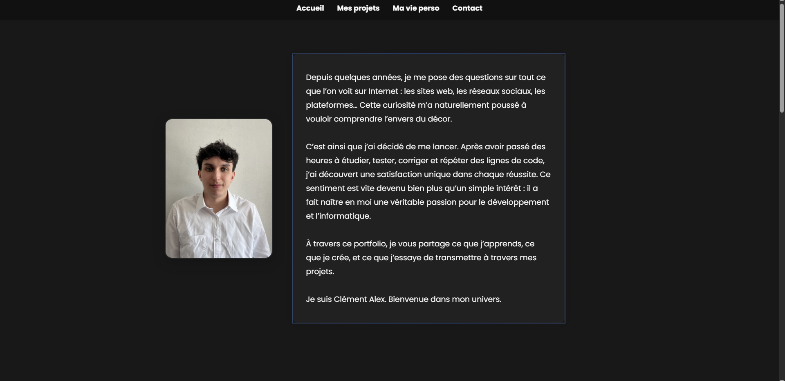

Mes Projets


Création d'un script tiktok-live
Quizz interactif automatiser avec tiktok-live


Création d'un site web maquette
Création d'un site web maquette.




Creation d'un portfolio
Description du projet 3.

D'autres projets sont en cours, notamment autour du back-end avec un approfondissement en PHP, ainsi que quelques projets orientés vers la cybersécurité